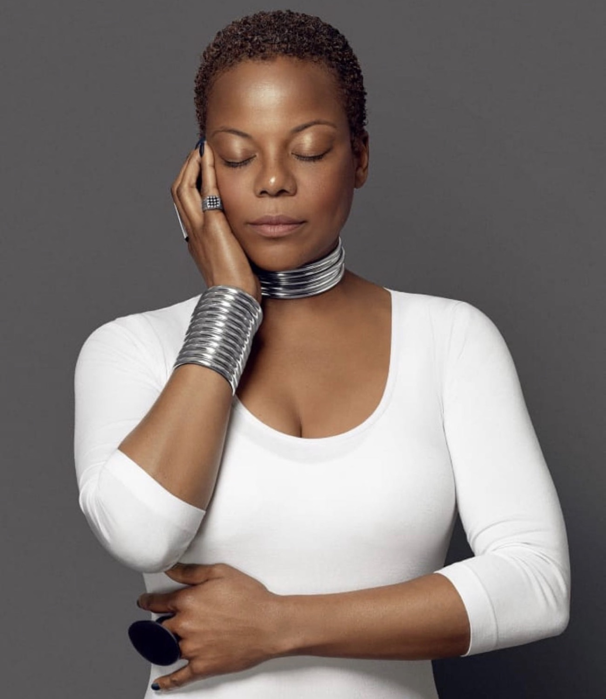
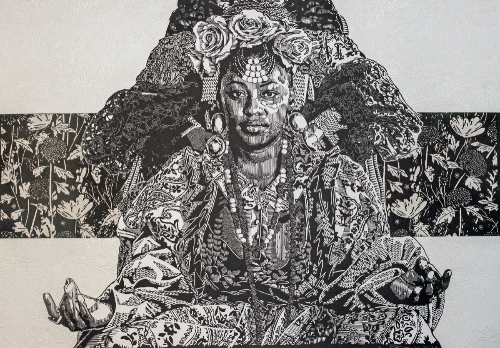

Johannesburg, South Africa
Opening doors across borders
Allana Foster-Finley is a global mobility strategist and cultural diplomat whose work has quietly transformed how artists, institutions, and creative industries access opportunity across borders.

- Global Mobility Strategist
- Cultural Diplomat
- Founder, Visa Diva Global
- Founder & Curator, CUR8AFRICA
The Story
From Philadelphia to Johannesburg — a life spent building bridges
For more than twenty-five years, she has built the relationships, systems, and pathways that enable creativity to move freely around the world—unlocking opportunity, fostering cultural exchange, and contributing to stronger creative economies across continents.
Born in Philadelphia and based in South Africa for more than twenty-five years, Allana’s journey began at the age of fourteen working at McDonald’s. A valedictorian graduate, she earned a Bachelor of Arts from the University of Virginia, studying African History, Spanish, and Linguistics before embarking on a career spanning fashion, music, television, entrepreneurship, and international cultural engagement.
Her early career included roles with Donna Karan, Tiffany & Co., Gucci America, and PolyGram during a defining era in the music industry. She later became Head of Wardrobe for Oxygen, the groundbreaking television network co-founded by Oprah Winfrey, where she led the wardrobe department and dressed acclaimed talent including Candice Bergen and Tasha Smith.
Rather than remaining in established industries, Allana chose Africa. South Africa became not simply her home, but her purpose.
For more than twenty-five years, Allana has advised, led, and collaborated on initiatives spanning global mobility, cultural diplomacy, the creative economy, fashion, visual arts, heritage, and international engagement. Her work includes partnerships with African Fashion International, Global Citizen, the American Society of South Africa, where she served as President, the Smithsonian National Museum of African Art, and the American Friends of the Hector Pieterson Museum Foundation, where she serves on the Executive Board, alongside numerous public and private sector organizations committed to advancing Africa’s creative economy and strengthening cultural exchange around the world.
Known for bringing together governments, artists, institutions, businesses, and international partners, Allana has built a career solving complex cross-border challenges where culture, diplomacy, international mobility, and economic opportunity intersect. She is frequently called upon to provide strategic counsel, navigate complexity, and design solutions that enable global collaboration.
A lifelong scholar, Allana completed a Postgraduate Diploma in the Arts and Historical Documentaries at the University of the Witwatersrand. She later became a member of the founding MBA graduating class of the African Leadership University School of Business in Kigali, Rwanda.
Recognizing that international mobility had become one of the greatest barriers facing the creative economy, Allana founded Visa Diva Global, a specialist global mobility consultancy dedicated to helping artists, entertainers, entrepreneurs, executives, cultural institutions, and international organisations navigate complex immigration systems and access opportunities around the world.
She is also the Founder and Curator of CUR8AFRICA, an initiative dedicated to elevating African artists and strengthening the continent’s presence within the global art market. Most recently, she partnered with the Art in Black Foundation, founded by Jeff Friday, Ellis Friday, and Nicole Friday of the American Black Film Festival, to help build a platform that seeks to do for African visual art what the American Black Film Festival has done for Black film and television over the past three decades: creating global visibility, opportunity, investment, and lasting legacy for African artists.
“I exist to open doors—so creativity can cross borders, opportunity can cross continents, and legacy can change the world.”
Partnerships & Institutions
Trusted where culture, diplomacy and opportunity intersect
- African Fashion InternationalGlobal brand & marketing
- Global CitizenInternational engagement
- American Society of South AfricaPresident
- Smithsonian National Museum of African ArtCultural partnership
- Hector Pieterson Museum FoundationExecutive Board, American Friends
- Art in Black FoundationCUR8AFRICA partnership
Two Ventures, One Mission
Where her work lives today

Art · Curation · LegacyCUR8AFRICA
Elevating African artists and strengthening the continent’s presence in the global art market — connecting artists and collectors across the diaspora.
View the collection Global Mobility · VisasVisaDiva.Global
Not just visas. Not just travel. A specialist consultancy positioning artists, entrepreneurs and institutions for global access, opportunity, and legacy.
Book a consultationAccess creates opportunity. Opportunity creates legacy. Legacy transforms communities, economies, and nations.
Her legacy is measured not by the spotlight she has sought, but by the countless artists, institutions, entrepreneurs, and cultural leaders whose journeys have been made possible because she chose to build bridges instead of barriers.